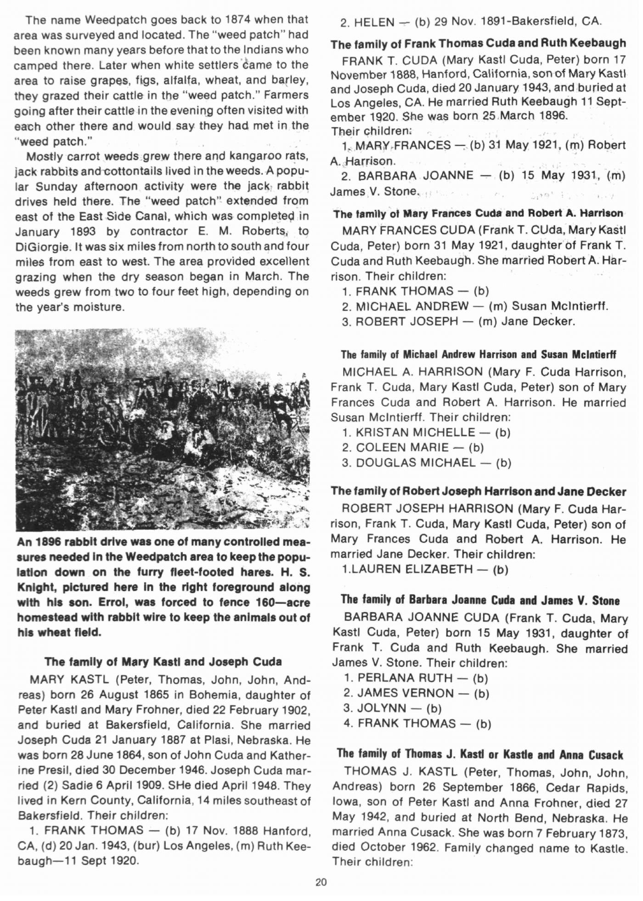
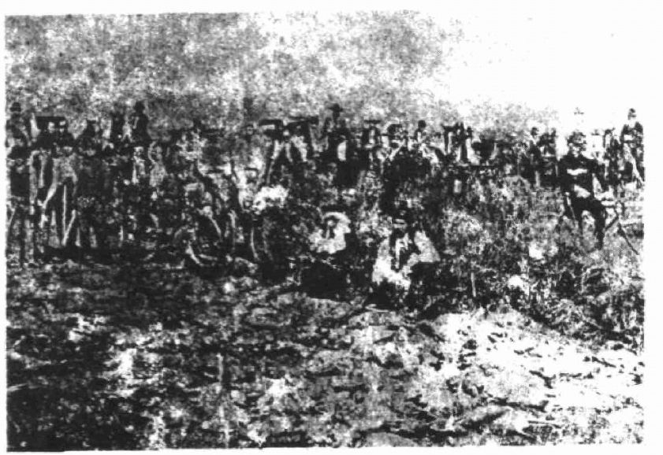

The book · The Family of Peter Kastl
Page 20 The family of Mary Kastl and Joseph Cuda


Transcription
The name Weedpatch goes back to 1874 when that area was surveyed and located. The "weed patch" had been known many years before that to the Indians who camped there. Later when white settlers came to the area to raise grapes, figs, alfalfa, wheat, and barley, they grazed their cattle in the "weed patch." Farmers going after their cattle in the evening often visited with each other there and would say they had met in the "weed patch."
Mostly carrot weeds grew there and kangaroo rats, jack rabbits and cottontails lived in the weeds. A popular Sunday afternoon activity were the jack rabbit drives held there. The "weed patch" extended from east of the East Side Canal, which was completed in January 1893 by contractor E. M. Roberts, to DiGiorgie. It was six miles from north to south and four miles from east to west. The area provided excellent grazing when the dry season began in March. The weeds grew from two to four feet high, depending on the year's moisture.


The family of Mary Kastl and Joseph Cuda
MARY KASTL (Peter, Thomas, John, John, Andreas) born 26 August 1865 in Bohemia, daughter of Peter Kastl and Mary Frohner, died 22 February 1902, and buried at Bakersfield, California. She married Joseph Cuda 21 January 1887 at Plasi, Nebraska. He was born 28 June 1864, son of John Cuda and Katherine Presil, died 30 December 1946. Joseph Cuda married (2) Sadie 6 April 1909. SHe [sic] died April 1948. They lived in Kern County, California, 14 miles southeast of Bakersfield. Their children:
- FRANK THOMAS — (b) 17 Nov. 1888 Hanford, CA, (d) 20 Jan. 1943, (bur) Los Angeles, (m) Ruth Keebaugh—11 Sept 1920.
- HELEN — (b) 29 Nov. 1891-Bakersfield, CA.
The family of Frank Thomas Cuda and Ruth Keebaugh
FRANK T. CUDA (Mary Kastl Cuda, Peter) born 17 November 1888, Hanford, California, son of Mary Kastl and Joseph Cuda, died 20 January 1943, and buried at Los Angeles, CA. He married Ruth Keebaugh 11 September 1920. She was born 25 March 1896. Their children:
- MARY FRANCES — (b) 31 May 1921, (m) Robert A. Harrison.
- BARBARA JOANNE — (b) 15 May 1931, (m) James V. Stone.
The family of Mary Frances Cuda and Robert A. Harrison
MARY FRANCES CUDA (Frank T. CUda [sic], Mary Kastl Cuda, Peter) born 31 May 1921, daughter of Frank T. Cuda and Ruth Keebaugh. She married Robert A. Harrison. Their children:
- FRANK THOMAS — (b)
- MICHAEL ANDREW — (m) Susan McIntierff.
- ROBERT JOSEPH — (m) Jane Decker.
The family of Michael Andrew Harrison and Susan McIntierff
MICHAEL A. HARRISON (Mary F. Cuda Harrison, Frank T. Cuda, Mary Kastl Cuda, Peter) son of Mary Frances Cuda and Robert A. Harrison. He married Susan McIntierff. Their children:
- KRISTAN MICHELLE — (b)
- COLEEN MARIE — (b)
- DOUGLAS MICHAEL — (b)
The family of Robert Joseph Harrison and Jane Decker
ROBERT JOSEPH HARRISON (Mary F. Cuda Harrison, Frank T. Cuda, Mary Kastl Cuda, Peter) son of Mary Frances Cuda and Robert A. Harrison. He married Jane Decker. Their children:
- LAUREN ELIZABETH — (b)
The family of Barbara Joanne Cuda and James V. Stone
BARBARA JOANNE CUDA (Frank T. Cuda, Mary Kastl Cuda, Peter) born 15 May 1931, daughter of Frank T. Cuda and Ruth Keebaugh. She married James V. Stone. Their children:
- PERLANA RUTH — (b)
- JAMES VERNON — (b)
- JOLYNN — (b)
- FRANK THOMAS — (b)
The family of Thomas J. Kastl or Kastle and Anna Cusack
THOMAS J. KASTL (Peter, Thomas, John, John, Andreas) born 26 September 1866, Cedar Rapids, Iowa, son of Peter Kastl and Anna Frohner, died 27 May 1942, and buried at North Bend, Nebraska. He married Anna Cusack. She was born 7 February 1873, died October 1962. Family changed name to Kastle. Their children:
People from the line of descent on this page
- Anna Frohner 1839–1919
- Mary Kastl 1865–1902
- Joseph Cuda 1864–1946
- Frank Thomas Cuda 1888–1943
- Helen Cuda b. 1891
- Ruth Keebaugh b. 1896
- Mary Frances Cuda b. 1921
- Barbara Joanne Cuda b. 1931
- Frank Thomas Harrison b. 1943
- Michael Andrew Harrison
- Robert Joseph Harrison
- Kristan Michelle Harrison b. 1972
- Colleen Marie Harrison b. 1975
- Douglas Michael Harrison b. 1978
- Lauren Elizabeth Harrison b. 1983
- Perlana Ruth Stone b. 1957
- James Vernon Stone b. 1958
- Jolynn Stone b. 1959
- Frank Thomas Stone b. 1961
- Thomas J. Kastl 1866–1942
- Anna Cusack 1873–1962
Transcriber’s notes
Top-left paragraphs continue the 'How Weedpatch Was Named' story from the previous page (new paragraph). Mary Kastl's mother is printed as 'Mary Frohner' while Thomas J. Kastl's mother is printed as 'Anna Frohner'; Joseph Cuda's mother printed 'Katherine Presil' here vs 'Catherine (Pracil)' on p.19 — all as printed. 'Frank T. CUda' and 'SHe' are print typos. Thomas J. Kastl's children list continues on next page.